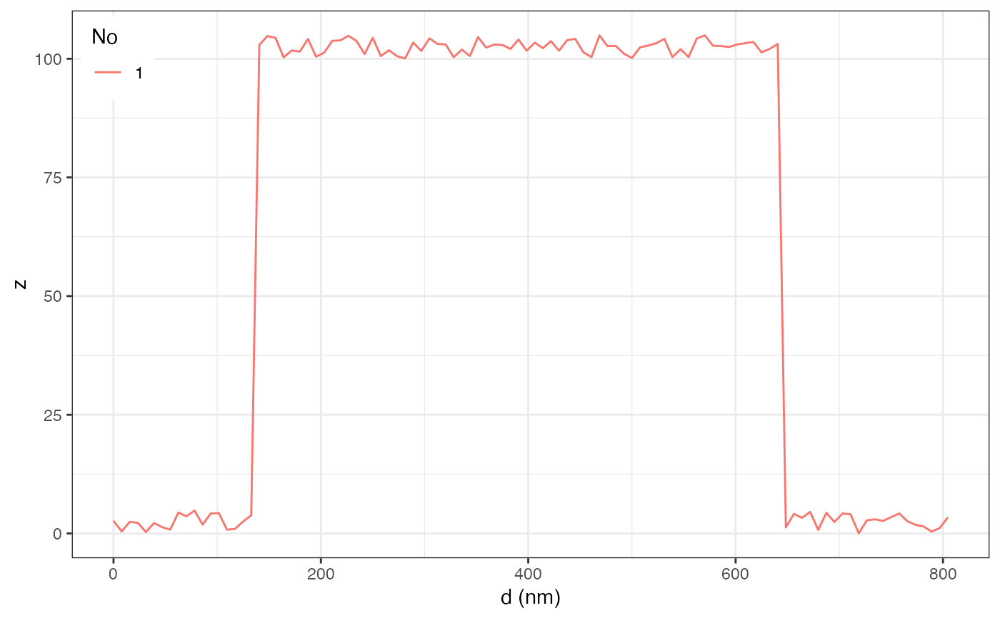
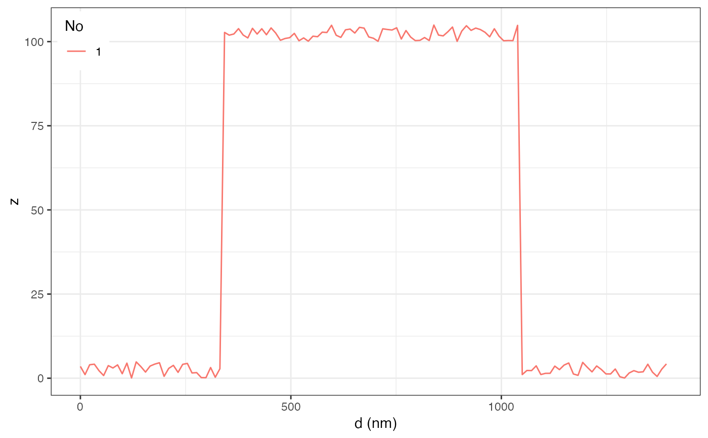

create a profile data line across an image (d), providing
the starting point (x1,y1) and end point (x2,y2). The start and end
points are provided in units of nanometers or pixels. If the starting
and end point coordinates are not provided, it will use the raster::click()
function to prompt the user to click on two points on the graph.
AFM.lineProfile(
obj,
x1 = NA,
y1 = NA,
x2 = NA,
y2 = NA,
unitPixels = FALSE,
verbose = FALSE
)AFMdata object
start x position in units of nm/pixels from bottom left, if NA, user will need to click on two points to define profile line
start y position in units of nm/pixels from bottom left, if NA, user will need to click on two points to define profile line
end x position in units of nm/pixels from bottom left, if NA, user will need to click on two points to define profile line
end y position in units of nm/pixels from bottom left, if NA, user will need to click on two points to define profile line
logical, if TRUE, then coordinates are in units of pixels otherwise nm
logical, if TRUE, output additional information
AFMdata object with line data, use AFM.linePlot() to graph / tabulate data or plot(addLines=TRUE) to graph image with lines
afmd = AFM.artificialImage(width=128, height=128, type='calibration', verbose=FALSE)
AFM.lineProfile(afmd, 100, 500, 900, 500) -> afmd2
AFM.linePlot(afmd2)

AFM.lineProfile(afmd, 1, 1, 128, 128, unitPixels=TRUE) -> afmd2
AFM.linePlot(afmd2)
#> Warning: Removed 1 row containing missing values (`geom_path()`).

head(AFM.linePlot(afmd2, dataOnly=TRUE))
#> x z type
#> 1 0.00000 0.6540877 1
#> 2 11.04854 2.4533393 1
#> 3 22.09709 1.1208146 1
#> 4 33.14563 0.8529335 1
#> 5 44.19417 1.7262605 1
#> 6 55.24272 0.2637656 1